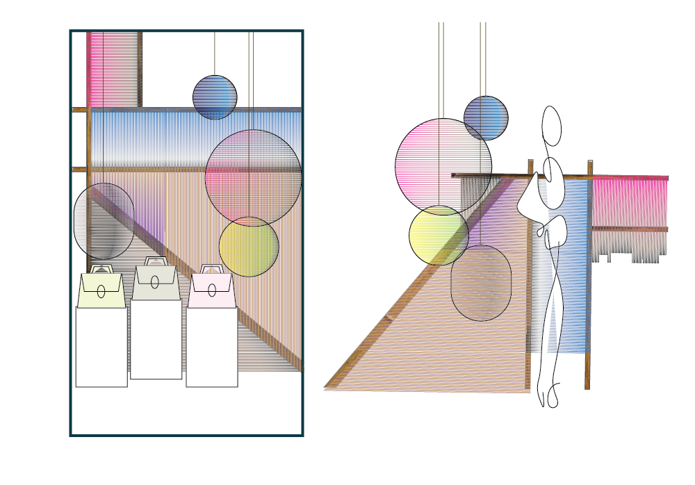

S
visual merchandise / product ideation
Through this course I was introduced to the art of displays & window design. As well as learning about the public relations aspect of visual merchandising. By visiting and exploring many shops in New York, I started to notice the small details that make a store or a space feel more inviting and enticing for customers. As a final project, I crafted and designed window displays, shelving and display cases as well as merchandise ideation.
Interior Design